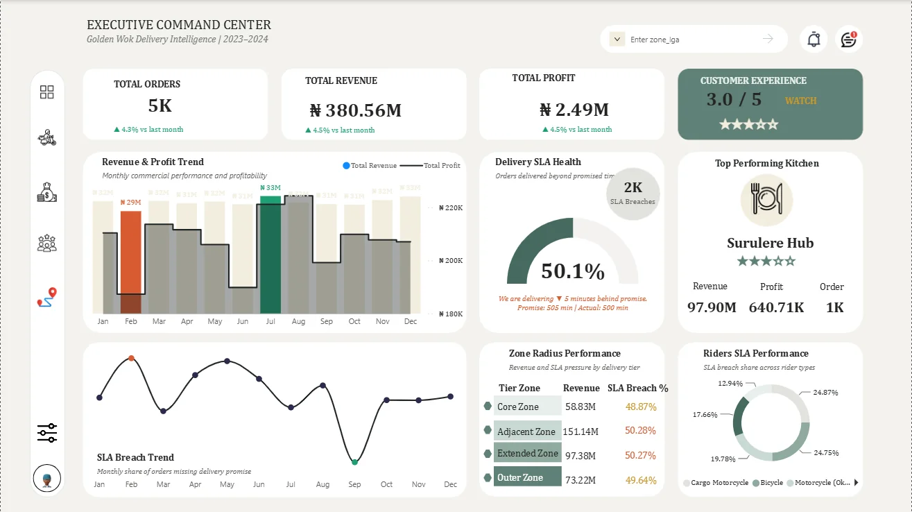
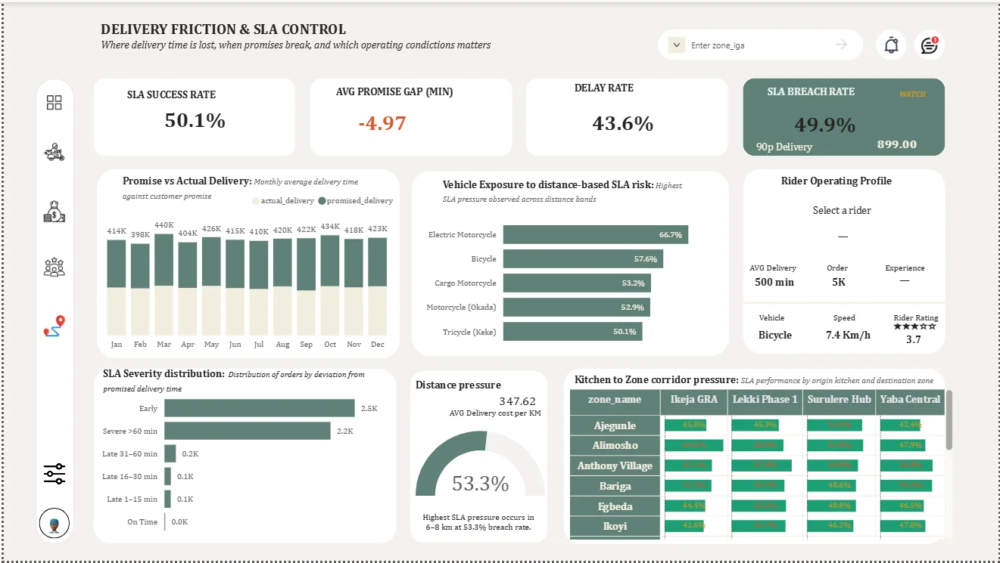
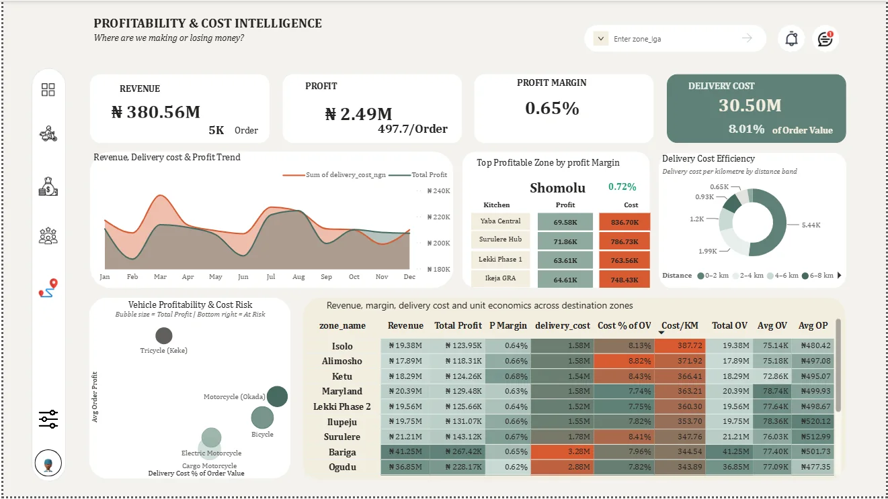
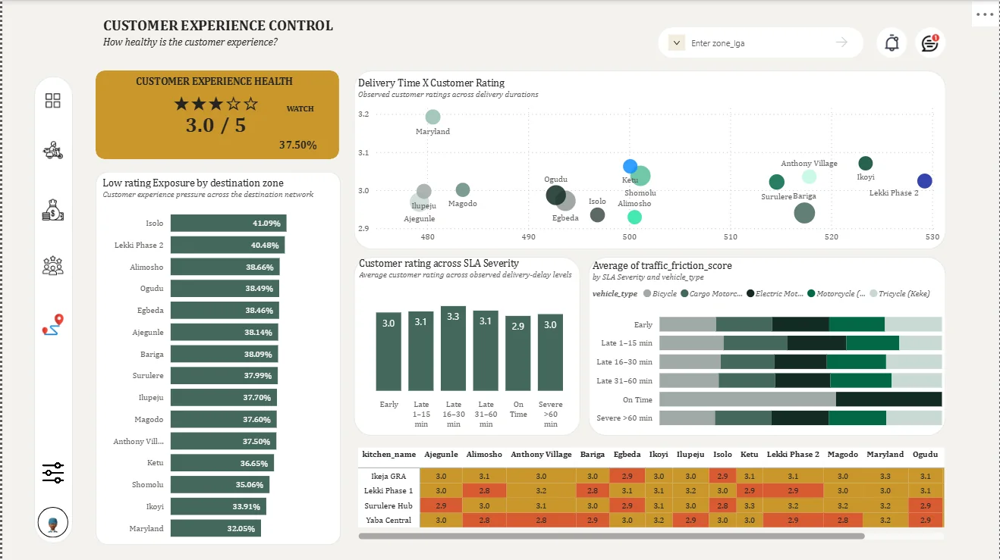

The problem
I built this for the DataDNA September 2026 dataset challenge. The Golden Wok scenario is fictional and the dataset is generated: 5,000 orders across 4 kitchens, 15 destination zones and 24 active riders, in Lagos, in naira, spanning 2023 to 2024. I say that everywhere on these pages, because the honest reading of any generated dataset is patterns within the data, not claims about a real business.
A typical delivery dashboard reports what happened: orders, revenue, average delivery time. That is a scorecard, and it answers nothing about what to do next. The challenge brief pushed for more: which routes are under pressure, what does that pressure cost, and which kitchen-to-zone combinations deserve attention first.
So I built the report around an operational chain instead of a chart pile: operating conditions shape delivery friction, friction shows up as SLA performance, SLA lands in the money, and the money and the delays both land on the customer. Each of my five pages owns one link of that chain, so management can move from what happened to where the pressure is.
The report answers one question per page: how healthy is the operation, where is delivery time lost, where are we making or losing money, how healthy is the customer experience, and how does the network itself perform.
The short answer
The headline is uncomfortable and that is the point. Half of all orders (49.9%) miss their promised delivery window, the average promise gap is -4.97 minutes, and the whole operation runs on a 0.65% profit margin: ₦380.56M of revenue returns just ₦2.49M of profit while delivery cost eats ₦30.50M, about 8% of order value. The pressure is not spread evenly. SLA breach rates sit near 50% in every zone tier and every vehicle group, but they climb to 53.28% in the 6 to 8 km distance band, and one corridor, Ikeja GRA to Alimosho, stands at 64.52% on 62 orders. My reading: this is not a slow-rider problem, it is a promise-calibration and distance-economics problem, and the fix order is promises first, distance economics second, one corridor third. Every number here comes off my own dashboard and my two project READMEs.

Numbers at a glance
Where they come from: the headline KPIs, the corridor and distance figures, and the zone and vehicle breakdowns are all read off my dashboard pages, and the row counts come from a direct profile of the CSV files I loaded into the model.
How to read each number
| Number | How I got it | How to read it |
|---|---|---|
| 49.9% SLA breach rate | Orders whose actual delivery time exceeded the promise, over all orders | Half the network misses its promise. My severity breakdown shows the misses are extreme: about 2.2K of the 2.5K breached orders arrived more than 60 minutes late. |
| -4.97 minute promise gap | Average of actual minus promised delivery time, per order | Deliveries run late on average, but only by five minutes against promises of roughly 505 minutes. The average hides how many orders are severely late. |
| 0.65% profit margin | ₦2.49M profit over ₦380.56M revenue | Almost no cushion. An 8% delivery cost against a 0.65% margin means small cost movements flip zones between profit and loss. |
| 8.01% delivery cost share | ₦30.50M delivery cost over order value | Delivery is the biggest controllable cost, and it rises sharply with distance. |
| 53.28% breach at 6 to 8 km | The distance band with the highest breach rate, 259 orders, with a minimum-volume rule applied | Distance is where the pressure concentrates. Shorter bands sit at or below the network average. |
| 64.52% on the worst corridor | Ikeja GRA to Alimosho, 62 orders, ranked with a minimum-order threshold | One kitchen-to-zone pairing is the clearest single point of failure in the network. |
What I found
Half the orders miss the promise, and the promise itself is half the problem
Are we delivering within our promises?
My SLA page shows a 50.1% success rate, a -4.97 minute average promise gap and a 43.6% delay rate. Those three numbers together tell a specific story: promises average about 505 minutes and actuals about 500, so on average the operation is nearly on promise. Yet half of all orders breach.
The severity distribution explains why. It is bimodal: roughly 2.5K orders arrive early while roughly 2.2K arrive more than 60 minutes late, with almost nothing in the middle bands. When an operation this split, the promise is mis-calibrated in both directions at once: too generous for the orders that run early, too tight for the orders that run severely late.
That is why my first recommendation is to fix the promises before fixing the riders. Recalibrating promise times by distance band attacks both tails at once, and it costs nothing operationally.
What it means. A breach rate of 50% with a nearly balanced promise-to-actual average is a promise-shape problem, not only a speed problem.
Recalibrate promised times by distance band before investing in speed.

Distance is the pressure line, and the cost curve bends at 6 km
Where is delivery friction concentrated?
I banded every order by delivery distance, and the pattern is steep. Breach rates sit near the network average in the short bands, then reach 53.28% in the 6 to 8 km band on 259 orders. Delivery cost per kilometre tells the sharper story: about ₦0.65K per km on the shortest runs, ₦0.93K and ₦1.2K through the middle bands, then ₦5.44K per km at 6 to 8 km. The cost curve does not climb gently, it bends.
The zone tiers do not explain this on their own. My page-one tier breakdown shows breach rates of 48.87% in Core, 50.28% in Adjacent, 50.27% in Extended and 49.64% in Outer zones, all within two points of each other. Distance, not zone label, is what separates the healthy orders from the broken ones.
The challenge brief hypothesised that orders beyond 8 km would show structurally negative profit. My dashboard shows the pressure building earlier, from 6 km up, which matters for where a cutoff or a re-pricing rule should sit.
What it means. Distance is the variable that moves both service and cost at the same time, which makes it the natural first split for any operating rule.
Draw the operating line at 6 km, not 8: price, route and promise differently above it.
The margin math leaves no room for surprises
Where is the operation creating or consuming value?
₦380.56M of revenue returns ₦2.49M of profit. That is a 0.65% margin, and delivery cost alone is ₦30.50M, 8.01% of order value. My profitability page breaks that down by zone, and the spread is thin everywhere: the top zone by margin, Shomolu, sits at 0.72% against a network average of 0.65%. Nobody is printing money; the whole network is one cost shock away from loss.
The vehicle view adds the shape. My scatter of average order profit against delivery cost share puts Tricycle (Keke) in the at-risk corner, high cost share and weak profit, while Motorcycle (Okada) sits in the healthy corner. The distance-cost curve explains why: vehicles assigned to long runs pay the steepest part of the cost curve.
That is also why the vehicle exposure ranking matters: Electric Motorcycle riders show 66.7% breach rates in the worst distance bands and Bicycle riders 57.6%, both well above Cargo Motorcycle at 53.2%. Assigning those vehicles to long routes is not a neutral choice.
What it means. At a 0.65% margin, operational decisions are existential. Vehicle-to-route assignment is the lever with the clearest mechanism behind it.
Treat vehicle assignment as a profitability decision, not a scheduling detail.

Ratings barely move, and that flatness is itself a finding
Is customer experience aligned with operational performance?
Overall experience health sits at 3.0 out of 5, which my dashboard flags as Watch, and low-rating exposure varies sharply by destination: Isolo at 41.09% and Lekki Phase 2 at 40.48% carry the most low-rating pressure, against Maryland at 32.05% at the other end.
But when I lined customer rating up against SLA severity, the line stayed flat. Ratings sit in a narrow 2.9 to 3.3 band across every severity level, and the On Time group actually reads lowest at 2.9. In this dataset, a severely late order is rated almost the same as an on-time one.
I will not over-read that. It may mean ratings in the generated data are close to noise, or that with delivery times this long and this uniform, severity stops differentiating. Either way, the operational conclusion is the same: on this data I cannot claim that fixing delays will lift ratings, so I would sell SLA fixes on cost and retention risk, not on a promised rating lift.
What it means. A flat rating curve is as informative as a steep one. Here it says the customer-experience story lives in the low-rating exposure by zone, not in the delay-to-rating link.
Fix zones with high low-rating exposure, and do not promise rating gains from speed alone.

One corridor is the clearest starting point
Which parts of the network require attention first?
My network page ranks kitchen-to-zone corridors by SLA pressure, with a minimum-order threshold so a tiny sample with an extreme rate cannot dominate the ranking. The current view puts Ikeja GRA to Alimosho at the top: 64.52% breach on 62 orders, about fifteen points above the network average.
The threshold is doing real work there. Without it, a corridor with five orders and a 100% breach rate would top the list and send management to a rounding error. With it, the ranking points at a corridor with enough volume that fixing it would be visible in the network numbers.
I pair the corridor finding with the capacity read: peak observed hourly demand of 3 orders against kitchen capacity puts highest utilisation at 6.67%. Capacity is not the constraint in this dataset. The constraint is what happens on the road, which keeps the focus on corridors and distance rather than kitchen throughput.
What it means. A prioritised list is only as good as its sample-size discipline. The corridor ranking earns trust because it refuses thin slices.
Start the operational review at Ikeja GRA to Alimosho, and re-run the ranking whenever the underlying data changes.

What I would do next
Fix the promises before fixing the speed
High priority- Evidence
- A 50.1% success rate with promises of roughly 505 minutes and a bimodal severity distribution: 2.5K orders early, 2.2K severely late.
- What to do
- Recalibrate promised delivery times by distance band so each band's promise reflects what that band actually delivers.
- What I expect
- Attacks both tails at once and costs nothing operationally.
Draw the operating line at 6 km
High priority- Evidence
- Breach rate reaches 53.28% at 6 to 8 km, and delivery cost per kilometre jumps from ₦1.2K to ₦5.44K entering that band.
- What to do
- Above 6 km, apply a different delivery fee structure, a different vehicle assignment, or a hard cutoff.
- What I expect
- Stops the orders that are structurally unprofitable and badly served.
Review the Ikeja GRA to Alimosho corridor first
High priority- Evidence
- 64.52% SLA breach on 62 orders, the highest of any corridor past the minimum-volume threshold.
- What to do
- Run an operational review of that specific kitchen-to-zone pairing: routing, rider allocation and promise time.
- What I expect
- The clearest single point of failure, and the fastest measurable improvement.
Match vehicles to routes deliberately
Medium priority- Evidence
- Electric Motorcycle (66.7%) and Bicycle (57.6%) carry the highest distance-band breach exposure; the vehicle profitability scatter puts Keke in the at-risk corner.
- What to do
- Assign long-distance and adverse-weather routes to the vehicle types with the best distance economics, not by availability.
- What I expect
- Fewer breaches on the routes where the cost curve is steepest.
Build a rain-day promise adjustment
Medium priority- Evidence
- The challenge brief flags rain conditions, and my time-slot model distinguishes rush hours; both are built into the model's slicers.
- What to do
- Trigger a promise adjustment when weather or rush-hour conditions apply, rather than holding riders to the clear-day promise.
- What I expect
- Removes predictable breaches from the count and protects the riders held to impossible promises.
Track low-rating zones separately from speed
Medium priority- Evidence
- Ratings sit flat at 2.9 to 3.3 across every SLA severity level, while low-rating exposure varies by zone from 32.05% to 41.09%.
- What to do
- Investigate what drives low ratings in Isolo and Lekki Phase 2 specifically, since delivery delay does not explain them on this data.
- What I expect
- Puts customer-experience effort where the exposure actually is.
What this can't tell you
The dataset is generated for the DataDNA challenge and the Golden Wok scenario is fictional. Profitability conclusions describe this dataset, not a real business's economics.
Delivery times in this data are far longer than real-world food delivery: promises average about 505 minutes. I read relative patterns between groups, not absolute times.
I excluded the food-temperature field from the customer-experience analysis entirely: its recorded values could not be validated, and I would rather report that than transform it silently.
My traffic-friction bands are analytical buckets I defined for display. They are not official traffic classifications and they do not establish causal thresholds.
Nothing here proves causation. A traffic group with a higher breach rate is an association worth investigating, not proof that traffic caused the delay.